第 3 章
表 3.1 列出了官能团。可作参考 - 无需记忆。
1 烃的分类hydrocarbons=CH
饱和烃saturated：仅含单键（无 键）
不饱和烃unsaturated：含 键
环状烃cyclic：含一个或多个环
无环烃acyclic：不含环
芳香烃aromatic：含苯环benzene或类似结构analogous
脂肪族aliphatic：非芳香族aromatic=可以饱和saturated的或不饱和unsaturated
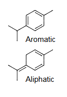
IUPAC 分类
烷烃alkanes：饱和的。如果是无环的，其分子式为
烯烃alkenes：含 个双键
炔烃alkynes：含 个三键
2同分异构体Isomers
同分异构体Isomers：分子式相同但结构不同的分子。
构造异构体Constitutional isomers在键连接性bond connectivity上有所不同。
构造异构体Constitutional isomers
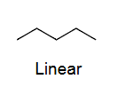
直链
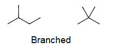
支链
IUPAC 命名法。nomenclature
(在表 3.3 中，记住 的名称)
| C(n) | Name | Formula (CₙH₂ₙ₊₂) |
|---|---|---|
| 1 | Methane | CH₄ |
| 2 | Ethane | C₂H₆ |
| 3 | Propane | C₃H₈ |
| 4 | Butane | C₄H₁₀ |
| 5 | Pentane | C₅H₁₂ |
| 6 | Hexane | C₆H₁₄ |
| 7 | Heptane | C₇H₁₆ |
| 8 | Octane | C₈H₁₈ |
| 9 | Nonane | C₉H₂₀ |
| 10 | Decane | C₁₀H₂₂ |
| 11 | Undecane | C₁₁H₂₄ |
| 12 | Dodecane | C₁₂H₂₆ |
| 13 | Tridecane | C₁₃H₂₈ |
| 20 | Icosane | C₂₀H₄₂ |
| 30 | Triacontane | C₃₀H₆₂ |
| 烷烃 | 烷基 | |||
|---|---|---|---|---|
| Alkane | Alk ane | Alkyl | Alk yl | Abbreviation |
| CH₄ | methane | CH₃ | methyl | Me |
| C₂H₆ | ethane | C₂H₅ | ethyl | Et |
| C₃H₈ | propane | C₃H₇ | propyl | Pr |
| C₄H₁₀ | butane | C₄H₉ | butyl | Bu |
简单的烷基C3H7：

CH₃CH₂CH₃= Propane
CH₃CH₂CH₂–= Propyl=Pr
(CH₃)₂CH–=Isopropyl=iPr
CH₃CH₂CH₂–Br=Propyl bromide=PrBr
(CH₃)₂CH–OH=Isopropyl alcohol=iPrOH
C3=prop=CH3-CH2-CH3
(prop yl)-(iso prop yl)-(prop yl)
从端点到中心
端点支链=prop yl
中心支链=iso prop yl
(prop yl)-(iso prop yl)-(prop yl)
简单的烷基C4H10： 的两种异构体：
基团，衍生自每个 异构体：

C4=but=CH3-CH2-CH2-CH3
直链
从端点到中心
端点支链=but yl
中心支链=sec but yl=二级sec
(but yl)-(sec but yl)-(sec but yl)-(but yl)

中心链
从端点到中心
端点支链=iso but yl
中心支链=tert but yl=三级tert
(iso butyl)
|
(tert butyl) - (iso butyl)
|
(iso butyl)
3 碳原子的分级=C上烷alk基yl取代的程度
碳原子的分级=C上烷alk基yl取代的程度
（ 是任意烷alk基yl=CnH2n+2）

primary carbon — 一级碳（连接一个其他碳原子）
secondary carbon — 二级碳（连接两个其他碳原子）
tertiary carbon — 三级碳（连接三个其他碳原子）
可以应用于碳原子或氢原子?
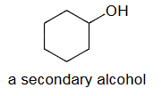
a secondary alcohol=二级醇=羟基（–OH）连接到一个二级碳原子上的醇COH
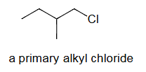
a primary alkyl chloride=一级烷基氯化物=氯原子（Cl）连接到一个一级碳原子上的烷基氯化物
4 IUPAC 命名法
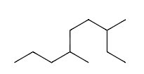
Step1
找到最长链并命名。nonane
Step2
对链上的原子进行编号，从距离支链最近的一端开始。3,6
Step3
命名每个取代基并给出其编号。di methyl
Step4
将名称写成一个单词，取代基按字母顺序排列。
Ex1 3,6-di methyl nonane
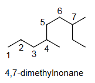
4,7-二甲基壬烷
错误，因为第一个取代基的编号不是最低的。
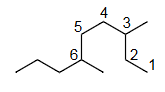
3,6-二甲基壬烷
3,6-di methyl nonane
正确，因为第一个取代基的编号是最低的。
Ex2 8-chloro-6-ethyl-2-methyldecane
8-氯-6-乙基-2-甲基癸烷
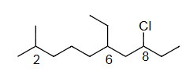
单键=ane
双键=ene
三键=yne
C10=Dec=dec
2=CH3=meth yl
6=C2H5=eth yl
8=Cl=chloro
c<e<m
8-chloro<6-ethyl<2-methyl
8-chloro-6-ethyl-2-methyl dec ane
●碳链编号时取代基编号最小
在对碳链编号时：
如果存在多个取代基，应以使第一个取代基编号最小的方式对主链进行编号。
如果仍无法做出决定，则应使 第二个取代基的编号最小 ，依此类推，直到可以做出决定为止。
Ex3 6-乙基-3,4-二甲基辛烷（而不是 3-乙基-5,6-二甲基辛烷）
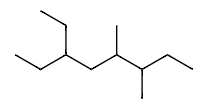
单键=ane
C8=oct
3=CH3=meth yl
4=CH3=meth yl
6=C2H5=eth yl
e<m
6-ethyl<3,4-dimethyl
6-ethyl-3,4-dimethyl oct ane
6-ethyl-3,4-dimethyloctane
(not 3-ethyl-5,6-dimethyloctane)
| 项目 | 第一个取代基 | 第二个取代基 |
|---|---|---|
| 从左侧编号 | 3 | 5 |
| 从右侧编号 | 3 | 4 |
| 判断结论 | 无法做出决定 | 结论：采用从右侧编号 |
| 1st Substituent | 2nd Substituent | |
|---|---|---|
| Number from left | 3 | 5 |
| Number from right | 3 | 4 |
| Decision | No decision possible | Conclusion: number from right |

Ex4 4-ethyl-4,5-dimethyloctane
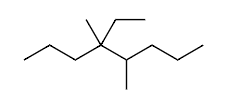
单键=ane
C8=oct
4=CH3=meth yl
4=C2H5=eth yl
5=CH3=meth yl
e<m
4-eth yl<4,5-di meth yl
4-ethyl-4,5-di meth yl oct ane
4-ethyl-4,5-di meth yloctane
(not 5-ethyl-4,5-dimethyloctane)
| 项目 | 第一个取代基 | 第二个取代基 |
|---|---|---|
| 从左侧编号 | 4 | 4 |
| 从右侧编号 | 4 | 5 |
| 判断结论 | 无法做出决定 | 结论：采用从左侧编号 |
| 1st Substituent | 2nd Substituent | |
|---|---|---|
| Number from left | 4 | 4 |
| Number from right | 4 | 5 |
| Decision | No decision possible | Conclusion: number from left |

●仅在无法做出决定时，才依据字母顺序进行编号。
Ex5 2-氯-6-氟-4-甲基庚烷（按字母顺序）
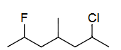
单键=ane
C7=hept
2=Cl=chloro
4=CH3=meth yl
6=F=fluoro
c<f<m
2-chloro<6-fluoro<4-meth yl
2-chloro-6-fluoro-4-methyl hept ane
2-chloro-6-fluoro-4-methylheptane
(based on the alphabet)
Ex6 6-氯-2-氟-3-甲基庚烷（按第二取代基位置）
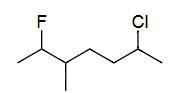
单键=ane
C7=hept
2=F=fluoro
3=CH3=meth yl
6=Cl=chloro
c<f<m
6-chloro<2-fluoro<3-methyl
6-chloro-2-fluoro-3-methyl hept ane
6-chloro-2-fluoro-3-methylheptane
(based on position of 2nd sub.)
Ex7 5-(1,1-二甲基丙基)-4-乙基壬烷
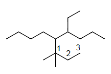
单键=ane
C9=non
4=C2H5=eth yl
5=套娃=（）=(1,1-dimethylpropyl)
（
从连接主链的碳原子开始计数的最长碳链
单键=ane=yl
连接主链的碳原子=中心碳
C3=prop yl
1=CH3=meth yl
1=CH3=meth yl
1,1-di meth yl
1,1-di meth yl prop yl
1,1-dimethylpropyl
）
d<e
5-(1,1-dimethylpropyl)<4-eth yl
5-(1,1-dimethylpropyl)-4-eth yl non ane
5-(1,1-dimethylpropyl)-4-ethylnonane
●命名支链取代基时，应根据其从连接主链的碳原子开始计数的最长碳链命名，并将其名称 置于括号中 。
●在按字母顺序排列时，以括号中的第一个字母为准，即使它以 di、tri 等前缀开始。
IUPAC 允许对简单支链取代基使用通用名称isopropyl, tert-butyl
Ex8 4-异丙基庚烷 或 4-(1-甲基乙基)庚烷
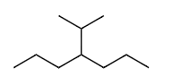
单键=ane
C7=hept
4=()=(1-methylethyl)
(
单键=ane=yl
C2=eth
1=CH3=meth yl
1-meth yl eth yl
1-methylethyl
)
4-(1-methylethyl) hept ane
4-(1-methylethyl)heptane
简单烷烃=简单支链=简称=通用名称
(
单键=ane=yl
C3=prop
从端点到中心
端点支链=prop yl
中心支链=iso prop yl
1=通过1连接
1-iso prop yl
)
4-(1-iso prop yl) hept ane
4-(1-isopropyl)heptane
●在按字母顺序排列时被忽略的前缀 ：
di、tri、tetra、...
sec-、tert-
二级sec，三级tert
（例外：支链取代基——见上述例子）
套娃时不忽略
●在按字母顺序排列时被包括的前缀 ：
iso、neo、cyclo
5 烷烃的构象CONFORMATIONS OF ALKANES
ALK=hydro carbons=CH
ANE=单键
alkane=alk ane=CH单键=CnH2n+2
Ethane=C2H6=CH3-CH3

二面的dihedral
四面的Tetrahedral
重叠式Eclipsed
=0° 二面角 dihedral angle
交叉式Staggered
=60° 二面角 dihedral angle

二面角 dihedral angle
重叠式Eclipsed=0°，交叉式Staggered=60°，重叠式Eclipsed=0°，交叉式Staggered=60°
有用的近似
一个有用的近似是：
这个 的能垒被认为是三个 交叉重叠相互作用之和。
那么一个 交叉重叠相互作用对能垒的贡献是 。
这个近似假设是： 在任何分子中，一个 交叉重叠相互作用都贡献 。
6 为什么交错构型Staggered的能量比重叠构型Eclipsed低？
两个模型：
模型1：
位阻相互作用模型 ：
Steric interaction
当两个基团靠近且其电子密度开始重叠时，电子-电子的排斥repulsion作用会急剧提高能量。基团group越大，位阻steric排斥越强。
模型2：
超共轭模型
Hyper conjugation
（McMurry称其为“扭转应变torsional strain”）：
交错构型相比重叠构型能实现更大的电子离域delocalization，这是通过填充与空的 轨道之间的相互作用实现的。
对于乙烷，普遍认为两种效应都很重要。对于含有比氢更大的相互作用基团（甲基、乙基、异丙基、叔丁基等）的分子， 位阻相互作用是主导因素 。
不考：超共轭
超共轭，即 轨道的离域作用，广泛存在于有机化学中，下面将简要讨论。以下内容不在 McMurry 教科书中，因此不会出现在考试或测验中。
当乙烷旋转时，“电子离域窗口”会交替打开（交错）与关闭（重叠）。在交错构型中，相邻碳原子的成键和反键 轨道（ 和 ）相互作用，形成碳原子之间的部分 键。与单独的 轨道相比，这种方式提供了更大的电子活动空间，覆盖两个碳原子而不是一个。根据不确定性原理，离域作用会降低交错乙烷的能量。这种机制在重叠乙烷中是无法实现的，因为相邻重叠 C-H 键的 和 轨道之间净重叠较弱。
交错构型Staggered
强的 型成键重叠
电子发生离域，能量降低。
重叠构型eclipsed
重叠较差（成键与反键作用大部分抵消）
电子不发生离域，能量未降低。
7 丙烷 C3=PROPANE
prop ane=C3H8=CH3-CH2-CH3
eth=C2=12kj/mol
prop=C3=14kj/mol
能量图与乙烷相同，但势垒energy barrier为 ，而不是 12。

重叠构型

交错构型

丙烷中的重叠相互作用：
=2 个 H–H（氢-氢）相互作用
+1 个 Me–H（甲基-氢）相互作用
计算 Me-H 重叠相互作用的数值：
●HH=
C2H6=4*3=12kj/mol
不考：C-C 键的旋转
如何理解两个或多个 C-C 键的旋转
（本节不在 McMurry 教科书中，因此不会出现在考试或测验中。）
○1
在 McMurry 和本课程中，我们使用 Newman 投影来分别考虑每个旋转。在丙烷、丁烷等分子中，连接在 键上的烷基基团被视为一个无结构的“团块”，其通过与邻近取代基的位阻作用影响 C-C 键的旋转势垒。
○2
以下是一种更现实的处理方法，展示了化学家如何思考像丙烷这样的分子。它不在考试范围内，因为不在 McMurry 教科书中，你可以放心跳过本页余下部分。
有两个 C-C 旋转，每个旋转的势垒为 。每个旋转角度都可以取任意值，因此会形成一个能量面，被称为“蛋盒表面”（egg-carton surface）。在红色峰值处， 和 的旋转都是重叠的；在蓝色谷底处，两者都是交错的。在其他网格点，一个是交错，一个是重叠。上方的 1D 曲线可以通过选择任一网格线并沿其从 到 的方向追踪（保持另一个角度不变）来得到。例如，沿 轴线（）的能量在 14 和 28 之间振荡；而在相邻的网格线（）上，能量在 0 和 14 之间变化。

○3
分子在蛋盒能量面上的运动
红色虚线对角线展示了一条路径，其中两个 基团一起旋转（协同运动）。所示路径保持恒定的能量 ，两个 基团以恒定的 差值共同旋转。这类路径说明构象变化不一定通过跳跃到相邻的极小值点来进行，也可以是非邻近极小值点之间的远程跳跃。这个例子说明了能量面相较于能量曲线的概念优势。
蛋盒型能量面（二维周期表面）对描述固体表面（如金属、石墨烯等）非常有用。它们已被用于研究催化与材料科学。
8 丁烷butane
丁烷=butane=C4H10=CH3-CH2-CH2-CH3
直链

对位Anti 相邻Gauche 相邻Gauche 对位Anti
错位staggered
丁烷butane的重叠eclipsing相互作用interactions：
±120° 重叠Eclipsing
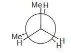
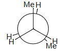
H–H + 2 Me–H = 4 + 2 × 6 = 16 estimated = 16 observed!
1HH+2MeH=4+2*6=4+12=16
0° 重叠Eclipsing
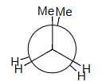
Compute Me–Me eclipsing interaction:
计算 Me–Me 重叠相互作用：
2 H–H + Me–Me = 19
Me–Me = 19 – 2 × 4 = 11 kJ/mol
重叠相互作用汇总（单位：kJ/mol）
Summary of Eclipsing Interactions (kJ/mol)
H–H： 4 kJ/mol
Me–H： 6 kJ/mol
Me–Me： 11 kJ/mol
Me–Me 近端（gauche）相互作用：3.8 kJ/mol
Me–Me Gauche Interaction: 3.8 kJ/mol
9 练习题：
Q0
画出 2-methylpentane中绕 键旋转的定性能量图
Q1
将 放在前面

Q2
画出 3 个重叠 和 3 个交错 的 Newman 投影，标记为 A 到 F，注明二面角。
应该是重叠构型。
Q3
定性判断能量最高和最低的重叠构型；交错构型也同理。
指导原则： 最大基团彼此远离时能量最低 。
Q4
所有重叠构型的能量都高于所有交错构型。
Q5
在能量图上按照角度单调递增的顺序排列 A-F。
A

高能量
B

高能量
C

低能量

D
高能量
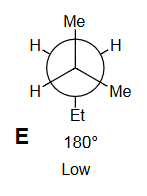
E
低能量
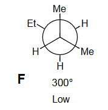
F
低能量

二面角